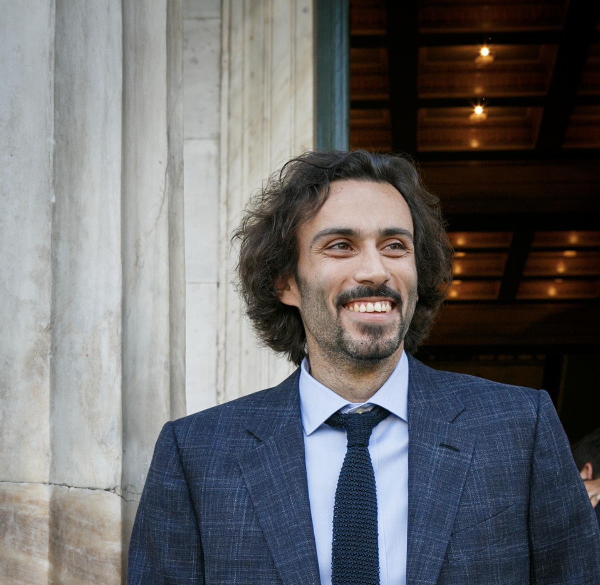
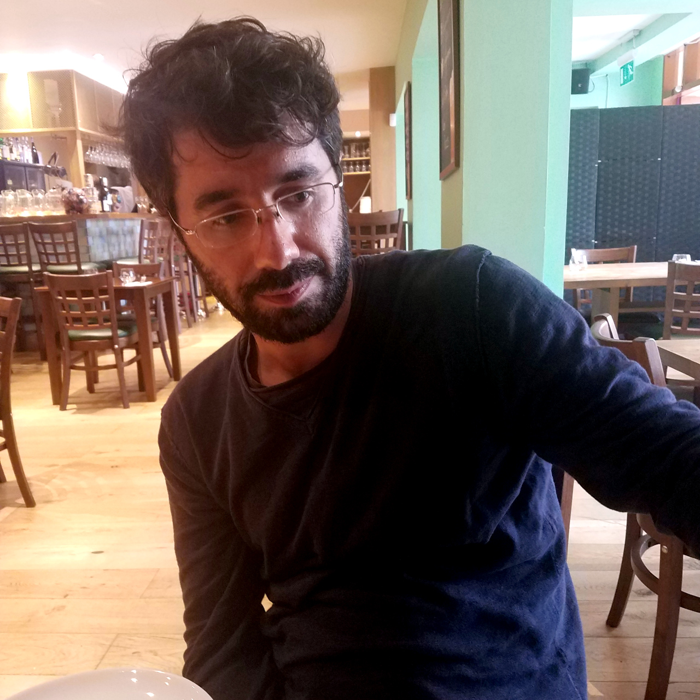

Kostas Margellos (Principal Investigator) received the Diploma in electrical and computer engineering from the University of Patras, Greece, in 2008 and the Ph.D. in automatic control from ETH Zurich, Switzerland, in November 2012, under the supervision of Prof. John Lygeros. From December 2012 till December 2013 he was a post-doctoral researcher at ETH Zurich working with Prof. John Lygeros, while from January 2014 till January 2015 he was a post-doctoral researcher in the Department of Industrial Engineering and Operations Research at UC Berkeley, working with Prof. Shmuel Oren. From February 2015 till February 2016 he was a post-doctoral researcher at the Department of Electronics, Information and Bioengineering, at Politecnico di Milano, working with Prof. Maria Prandini. In March 2016 he joined the Control Group, Department of Engineering Science, University of Oxford, where he is currently an Associate Professor. He is also a Lecturer at Worcester College. His research interests currently focus on: Reachability analysis and optimal control of hybrid systems, Data based optimization, Randomized and robust optimization, Statistical learning theory, Decentralized and distributed computation, Decision making in power networks with uncertainty.
Filiberto Fele (Postdoctoral researcher) received the degree in mechatronics engineering from Politecnico di Torino. He has been a research assistant with the Department of Systems and Automation Engineering at the University of Seville, where he received his PhD degree. From April 2017 till March 2018, he was a research associate with the Control and Power group, Department of Electrical and Electronic Engineering, at Imperial College London. Since April 2018 he is with the Control Group, Department of Engineering Science, University of Oxford. His research interests focus on the management of large-scale distribution networks through optimal control and game-theoretical methods.